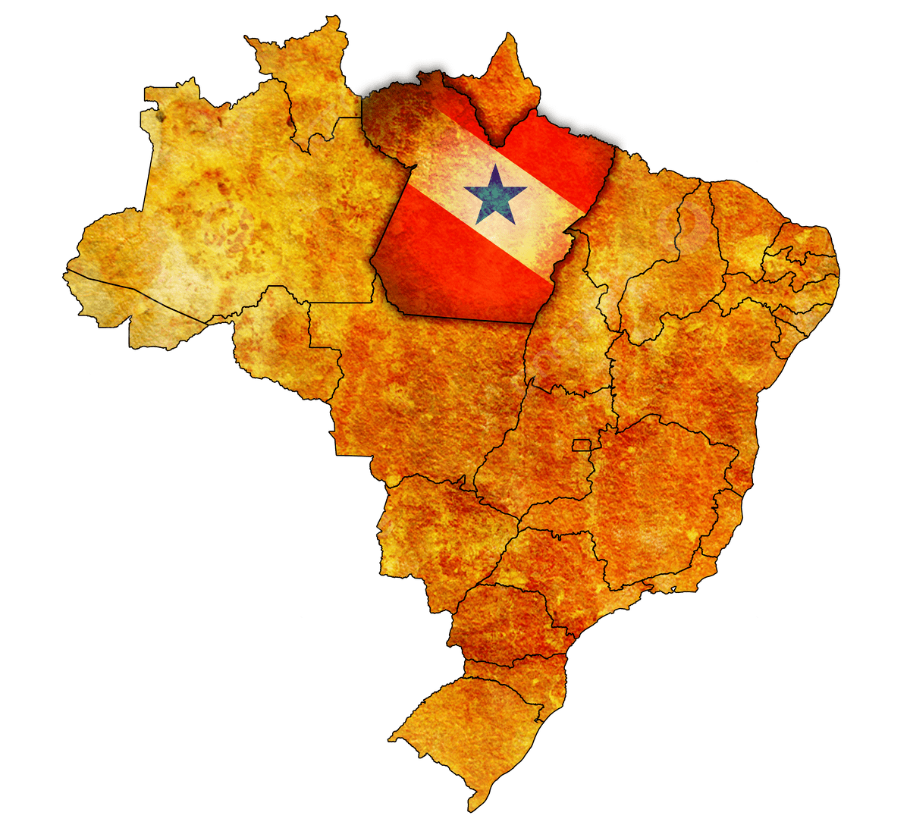

Francilene Ferreira
Sobre Mim
Olá! Meu nome é Francilene Ferreira, nasci em Belém/Pará, mas, moro em Fortaleza/Ceará há 16 anos. Eu simplesmente amo essa cidade, amo o mar, amo a culinária nordestina, amo as paisagem naturais, amo viajar e conhecer novos lugares. Tenho bacharelado em Ciências Contábeis, trabalho no Setor Financeiro há mais de 10 anos. Atualmente curso Desenvolvimento Web. Estou muito animada com essa nova jornada e espero aprender muito com esse curso.
Belém, Pará

O Pará é o segundo maior estado do Brasil em extensão territorial e abriga uma rica biodiversidade, além de uma cultura única marcada por fortes heranças indígenas e amazônicas Pará, um estado no norte do Brasil, é onde se encontra o Parque Nacional da Amazônia. Protegendo uma extensa faixa da exuberante e densa Floresta Amazônica, o parque é lar de milhares de espécies da vida selvagem. Boa parte dela é alagada todos os anos, tornando o acesso a áreas distantes somente por barco. Próxima da desembocadura do Rio Amazonas está Belém, a capital do Pará. Ela é conhecida pela arquitetura colonial e pelo mercado Ver-o-Peso às margens do rio.